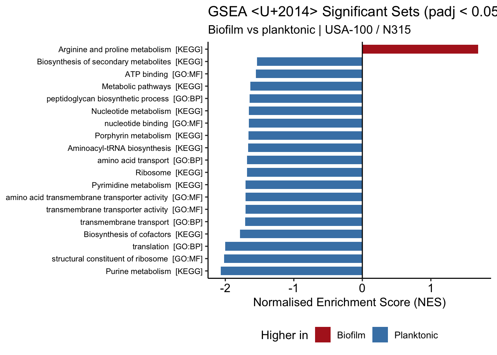
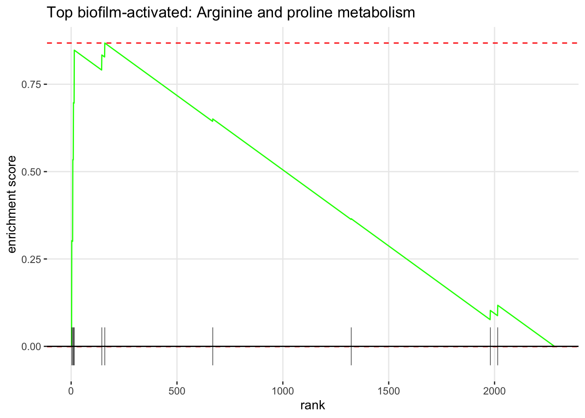
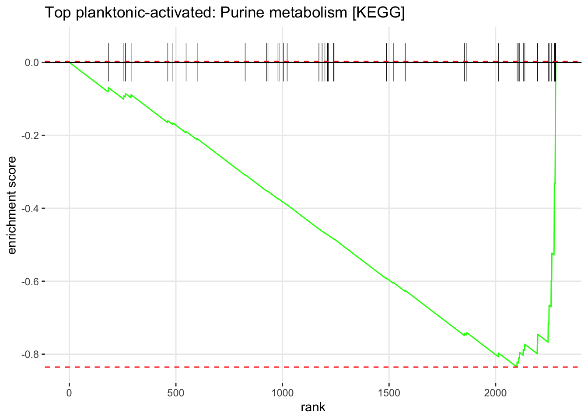

Part 2 — Gene Set Enrichment Analysis (GSEA)
GSEA asks: “Are genes in a set coordinately shifting up or down across the full ranked list?”
Unlike ORA, GSEA uses all tested genes, ranks them by a metric encoding significance and direction, and returns a Normalised Enrichment Score (NES): positive = up in biofilm, negative = up in planktonic.
Why signed log p-value for ranking?
rank = sign(LFC) x -log10(pvalue)
Genes at the top are significantly up in biofilm; genes at the bottom are significantly up in planktonic. This is more robust than ranking on fold change alone, which can place noisy high-fold-change genes from lowly expressed genes at the extremes.
Note: A few genes have pvalue = 0 — below machine precision, i.e. the
strongest hits in the contrast. Since -log10(0) = Inf is not a valid ranking
score, we clamp those p-values to the smallest representable number instead of dropping them, so the
top genes keep their place at the extremes of the list.
Prepare the Ranked Gene List
ranked_df <- res_df %>%
filter(!is.na(pvalue), !is.na(log2FoldChange)) %>%
mutate(pvalue = pmax(pvalue, .Machine$double.xmin)) %>%
mutate(rank_metric = sign(log2FoldChange) * -log10(pvalue)) %>%
arrange(desc(rank_metric)) %>%
distinct(gene_id, .keep_all = TRUE)
rank_vector <- ranked_df$rank_metric
names(rank_vector) <- ranked_df$gene_id
cat("Genes in ranked list :", length(rank_vector), "\n")## Genes in ranked list : 2288## Infinite values : 0## Top 5 (biofilm) : SA_RS13765, SA_RS11435, SA_RS08185, SA_RS04655, SA_RS03880## Bottom 5 (planktonic): SA_RS05255, SA_RS05590, SA_RS05835, SA_RS07385, SA_RS11270Convert Gene Sets to fgsea Format
fgsea takes a named list of gene vectors. We convert all three collections and keep a lookup
of each set’s source for labelling.
# Some set names exist in more than one collection (e.g. "DNA replication" is both
# a KEGG pathway and a GO:BP set), so we key on "name [source]" to keep them apart.
set_labels <- paste0(all_gmt$ontology_name, " [", all_gmt$source, "]")
pathways_list <- setNames(all_gmt$list_of_values, set_labels)
set_source <- setNames(all_gmt$source, set_labels)
cat("Sets in fgsea list:", length(pathways_list), "\n")## Sets in fgsea list: 216## Duplicate bare names disambiguated: 1Run GSEA
We use fgseaMultilevel, which resolves very small p-values more accurately than simple
permutation, with minSize = 10 and maxSize = 500.
set.seed(42)
gsea_results <- fgseaMultilevel(
pathways = pathways_list,
stats = rank_vector,
minSize = 10,
maxSize = 500
) %>%
as.data.frame() %>%
mutate(source = set_source[pathway])
cat("Sets tested :", nrow(gsea_results), "\n")## Sets tested : 122## Significant (padj < 0.05): 19## Nominal (pval < 0.05) : 26Inspect Significant Sets
gsea_sig <- gsea_results %>%
filter(padj < 0.05) %>%
arrange(padj)
cat("Significant GSEA sets:", nrow(gsea_sig), "\n")## Significant GSEA sets: 19## Activated in biofilm (NES > 0): 1## Activated in planktonic (NES < 0): 18if (nrow(gsea_sig) > 0) {
DT::datatable(
gsea_sig %>%
select(source, pathway, NES, pval, padj, size) %>%
mutate(
direction = ifelse(NES > 0, "Biofilm", "Planktonic"),
across(where(is.numeric), \(x) signif(x, 3))
) %>%
arrange(desc(abs(NES))),
rownames = FALSE,
colnames = c("Source", "Set", "NES", "p-value", "padj", "Size", "Higher in"),
extensions = c("Buttons", "Scroller"),
options = list(dom = "Bfrtip", buttons = c("copy", "csv"),
scrollX = TRUE, scrollY = 300, scroller = TRUE),
caption = "Significant GSEA sets (padj < 0.05)"
)
} else {
cat("No sets significant after correction. The nominal top sets below are directional only.\n")
}The biofilm-activated signal
Almost all significant enrichment in this contrast points to processes that are higher in planktonic (negative NES). The genes induced in biofilm rarely fall into a coherent annotated set. It is therefore worth naming explicitly any set that is significantly activated in biofilm (positive NES), because that is the exception, not the rule.
biofilm_sets <- gsea_sig %>% filter(NES > 0) %>% arrange(desc(NES))
if (nrow(biofilm_sets) > 0) {
cat("Sets significantly activated in biofilm (padj < 0.05, NES > 0):\n")
for (i in seq_len(nrow(biofilm_sets))) {
cat(sprintf(" - %s NES = %.2f, padj = %.3g, size = %d\n",
biofilm_sets$pathway[i],
biofilm_sets$NES[i], biofilm_sets$padj[i], biofilm_sets$size[i]))
}
cat("\nInterpret small sets with care: a high NES on a set of only a few genes",
"is fragile. Check the size column above.\n")
} else {
cat("No gene set is significantly activated in biofilm.\n")
cat("The biofilm-induced genes do not cluster into any annotated KEGG pathway or GO term.\n")
}## Sets significantly activated in biofilm (padj < 0.05, NES > 0):
## - Arginine and proline metabolism [KEGG] NES = 1.71, padj = 0.0248, size = 10
##
## Interpret small sets with care: a high NES on a set of only a few genes is fragile. Check the size column above.NES Bar Plot
If any sets survive correction we plot them; otherwise we fall back to the top sets by nominal p-value and label them clearly as directional, not confirmed.
use_padj <- nrow(gsea_sig) > 0
gsea_bar <- (if (use_padj) gsea_sig
else gsea_results %>% filter(pval < 0.05)) %>%
slice_max(abs(NES), n = 20) %>%
mutate(
direction = ifelse(NES > 0, "Biofilm", "Planktonic"),
set_label = fct_reorder(pathway, NES)
)
if (nrow(gsea_bar) > 0) {
ttl <- if (use_padj) "GSEA — Significant Sets (padj < 0.05)"
else "GSEA — Top Sets by Nominal p-value (directional only, not padj-significant)"
ggplot(gsea_bar, aes(x = NES, y = set_label, fill = direction)) +
geom_col(width = 0.7) +
geom_vline(xintercept = 0, linewidth = 0.5) +
scale_fill_manual(values = c("Biofilm" = "firebrick", "Planktonic" = "steelblue")) +
theme_pubr() +
theme(legend.position = "bottom",
axis.text.y = element_text(size = 8)) +
labs(
title = ttl,
subtitle = paste0("Biofilm vs planktonic | ", cfg$label),
x = "Normalised Enrichment Score (NES)",
y = NULL,
fill = "Higher in"
)
} else {
cat("No sets to plot at nominal p < 0.05.\n")
}
Enrichment Plot — Top Sets in Each Direction
The running enrichment score for the single strongest set in each direction. The peak is the enrichment score; the “rug” at the bottom marks where that set’s genes fall in the ranked list.
How to read it: the x-axis is every gene, ordered from most biofilm-up (left) to most planktonic-up (right). Each tick in the rug is one gene of the set. If the ticks bunch near one end, the curve climbs to a high peak there — that is coordinated enrichment. Ticks spread evenly across the axis give a flat, wandering curve and no enrichment.
pick_top <- function(res, positive) {
d <- res %>% filter(if (positive) NES > 0 else NES < 0)
d <- if (nrow(gsea_sig) > 0) d %>% filter(padj < 0.05) else d %>% filter(pval < 0.05)
if (nrow(d) == 0) return(NULL)
d %>% slice_min(pval, n = 1) %>% pull(pathway)
}
top_biofilm <- pick_top(gsea_results, TRUE)
top_planktonic <- pick_top(gsea_results, FALSE)
if (!is.null(top_biofilm)) {
print(plotEnrichment(pathways_list[[top_biofilm]], rank_vector) +
labs(title = paste("Top biofilm-activated:", top_biofilm)))
}
if (!is.null(top_planktonic)) {
print(plotEnrichment(pathways_list[[top_planktonic]], rank_vector) +
labs(title = paste("Top planktonic-activated:", top_planktonic)))
}